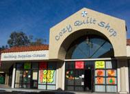
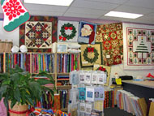
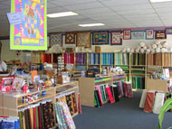

Address
Cozy Creative Center756 Jamacha Rd
El Cajon, CA
92019
Telephone
(619) 670-0652Hours
Mon-Sat: 9:30am - 5:30pmThursday: 9:30am - 6:30pm
Sun: 12pm- 4pm
Website
www.cozyquilt.com
Cozy Creative Center
Cozy Creative Center (formerly Cozy Quilt Shop) has moved just 3.5 miles from their old location. Now with more room, great light, and located just 1 mile South of Interstate 8, Cozy becomes an even more attractive destination for quilters! The home of the pattern company Cozy Quilt Designs (known for Strip Club patterns and the Strip Tube Ruler) and carrying top quality quilting fabric, notions, books, patterns, classes and inspiration, it is source for all your quilting needs.
Map & Directions
View Larger Map
- Home
- Prize Winners
- Webmaster
- © Southern California Quilters Run 2016-17